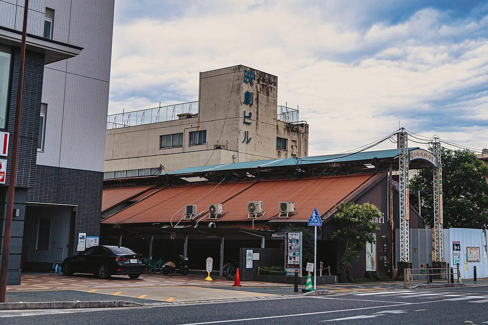

Inuki bukken: the shop haunted by the last shop
Sooner or later in Japan you will walk into a café with an unmistakably tiled floor sloping to a drain, or a bar in a room with a vault door in the back wall, or a clothes shop whose ceiling is too high and whose lighting track runs in rows that make no sense for clothes. The building has not been designed oddly. You are standing inside the previous business. The Japanese term is 居抜き物件 (inuki bukken) — a property let with the last tenant's fittings still in it — and the reason Japan has so many of them is a clause in commercial leases that most English writing about Japan never mentions. Once you understand that clause, a lot of what looks like charming randomness on a Japanese street turns out to be an economic mechanism you can read.

Two ways to hand back a shop
Japanese commercial space is described in two states, and the distinction runs through the whole industry.
| State | Japanese | What you get |
|---|---|---|
| Skeleton | スケルトン物件 sukeruton bukken | Bare structure. Exposed concrete, no interior, no kitchen, sometimes not even finished services. You build everything |
| Inuki | 居抜き物件 inuki bukken | The last tenant's interior still standing — fit-out, kitchen equipment, air conditioning, furniture, sometimes down to the crockery |
In most countries the second condition happens by accident, when a landlord cannot be bothered to clear a unit. In Japan it is a defined product with its own listing sites, its own brokers and its own contract type — because the alternative is expensive enough that both sides want to avoid it.
The rule that drives everything
Japanese commercial leases carry an obligation called 原状回復 (genjō kaifuku), restoration to original condition. For a shop or restaurant taken on as a skeleton, "original condition" means skeleton. When you leave, you are generally required to demolish everything you installed and hand back bare structure.
Read that from the departing tenant's side. Your business has closed — which is usually why you are leaving — and the lease now requires you to spend a substantial sum destroying your own kitchen. That is the worst possible moment to face a bill, and it is the pressure that created the entire inuki market.
What stripping a shop costs
Japanese contractors quote restoration by the tsubo (坪), a traditional unit of about 3.3 square metres. Published industry guidance puts the typical range around:
| Type of business | Rough cost to strip back |
|---|---|
| Light dining — cafés, bars軽飲食 keiinshoku | Around ¥50,000 per tsubo |
| Heavy dining — ramen, yakiniku, Chinese重飲食 jūinshoku | Around ¥100,000 per tsubo |
Those are baselines, and the real figure climbs with the awkwardness of the job: an upper floor with a difficult route for carrying debris out, work that can only be done at night, lots of partitioned rooms, heavily modified drainage or extraction, long duct runs, or embedded grease and odour. Japanese sources note it is not unusual for even a small space to reach ¥1,000,000.
For scale: a modest 15-tsubo ramen shop — roughly 50 m² — sits in the region of ¥1.5 million to strip out at those rates. That bill lands on an owner who has just closed a business.
The deal that avoids it
The escape route is a separate contract called 造作譲渡 (zōsaku jōto), a transfer of fixtures. The outgoing tenant sells the interior — fit-out, kitchen equipment, air conditioning, furniture — to the incoming tenant, either for a fee (造作譲渡料, zōsaku jōtoryō) or, when they simply want out, for nothing.
The important structural point is that this is not the lease. The incoming tenant signs a lease with the landlord in the normal way, and separately buys the fittings from the departing tenant. Two agreements, two counterparties.
Look at what that does to the incentives:
- The tenant leaving avoids the restoration bill entirely and may receive a payment instead. The swing between the two outcomes is the whole cost of demolition plus whatever the fittings fetch.
- The tenant arriving skips most of a fit-out and opens far sooner. Japanese sources describe this as decisive for individually-financed openings — someone leaving a salaried job to start a restaurant, with limited capital.
- The landlord gets the unit re-let faster and without a demolition period.
Everyone gains, so the kitchen stays where it is. And that is why the room you are sitting in still looks like the last business.
Why ramen shops are worth more empty
Fixture transfer prices track how expensive the equipment was to install in the first place. Heavy dining — ramen, yakiniku, Chinese — needs serious extraction, gas capacity, grease traps and drainage, so the installed kit is valuable and the transfer fee is correspondingly high. Cafés, bars and takeaway counters carry simpler equipment and settle at lower figures.
This produces a neat asymmetry worth appreciating. A closing ramen shop faces the highest restoration bill and commands the highest fixture price. The gap between its two possible exits is enormous, which is precisely why heavy-dining spaces so often pass intact from one operator to the next. Chains of successive ramen shops in the same unit are not a coincidence of taste; they are a consequence of extraction ducting being expensive to install and expensive to remove.
Reading a room
Once you know the mechanism, the giveaways are everywhere. A few things to notice when a space feels subtly wrong for its current occupant:
- Floors that slope to a drain in a room with no obvious need for one — a strong sign of a former kitchen or bathhouse.
- Tiling that stops at a line no current fitting explains.
- Extraction hoods or capped duct penetrations above a room now serving coffee.
- Ceiling height and lighting grids designed for a completely different activity — long parallel runs suit rows of machines, not a boutique.
- Doorways and thresholds in the wrong places, especially separate entrances that once split a space by gender or by function.
- Heavy structure that nobody would build today: a vault door, a raised platform, an oversized service counter.
Two categories reward attention in particular. Former sentō — neighbourhood bathhouses — have been converted into cafés, bars and shops across Tokyo, and they are unmistakable: high ceilings, tiling, and the plan of a building organised around water. And with pachinko parlours closing in numbers, their very large, very deep floorplates have been passing to retail and other uses; Japanese property agents now market former pachinko halls explicitly as flexible large-format space.
The catch
If you are reading this because you are thinking of opening something in Japan rather than just looking at rooms: an inuki deal transfers equipment of unknown age and history, often without meaningful warranty. Second-hand commercial refrigeration and extraction can fail early, and replacing it costs more than fitting new kit would have. The previous business also failed in that space often enough that its layout may be part of the reason. There are tax and depreciation consequences to buying fixtures as assets, and landlords sometimes require that their own contractor does any work. This article explains a phenomenon; it is not commercial advice, and anyone actually signing something needs a Japanese-speaking professional.
The Japanese you'll actually use
| Japanese | Reading | Meaning |
|---|---|---|
| 居抜き物件 | inuki bukken | a property let with the previous fittings in place |
| スケルトン物件 | sukeruton bukken | bare-structure property |
| 原状回復 | genjō kaifuku | restoration to original condition — the obligation behind it all |
| 造作 | zōsaku | fixtures and fittings |
| 造作譲渡 | zōsaku jōto | transfer of fixtures — the contract that saves the room |
| 造作譲渡料 | zōsaku jōtoryō | the fee paid for those fixtures |
| 坪 | tsubo | about 3.3 m² — the unit costs are quoted in |
| 重飲食 | jūinshoku | "heavy dining" — ramen, yakiniku, Chinese |
| 軽飲食 | keiinshoku | "light dining" — cafés, bars |
| テナント | tenanto | tenant / commercial unit |
Want these to stick? The free JLPT battle quiz drills practical vocabulary like this with spaced repetition.
Patterned wall blocks →, overhead power lines →, air-conditioner outdoor units →, the museum of fire-hose inlets → and Shōwa-era kissaten →.
Common questions
Q. What does inuki bukken mean?
A. 居抜き物件, a commercial property let with the previous tenant's interior still in place — fit-out, kitchen equipment, air conditioning and furniture. The opposite is a スケルトン物件, a skeleton property handed over as bare structure.
Q. Why is this so common in Japan?
A. Because of 原状回復, the restoration obligation in Japanese commercial leases. A tenant who took a space as a skeleton is generally required to demolish everything they installed and return bare structure, which means paying a large bill at the moment their business closes. Passing the fittings to a successor avoids that.
Q. How much does restoration cost?
A. Industry guidance puts light dining such as cafés and bars around ¥50,000 per tsubo (about 3.3 m²) and heavy dining such as ramen and yakiniku around ¥100,000 per tsubo. Difficult access, night-only work, heavy modification to drainage or extraction and embedded grease push it higher, and even small spaces can reach ¥1,000,000.
Q. What is zōsaku jōto?
A. 造作譲渡, a separate contract transferring the fixtures from the outgoing tenant to the incoming one, for a fee called 造作譲渡料 or sometimes for free. It is distinct from the lease: the new tenant signs the lease with the landlord and buys the fittings from the previous tenant.
Q. Why do ramen shops so often follow ramen shops?
A. Heavy dining needs expensive extraction, gas, grease traps and drainage. That makes both the restoration bill and the fixture value high, so the gap between stripping out and transferring is at its largest — and the equipment tends to stay put and be reused.
Q. How can I tell a space was something else?
A. Look for floors sloping to a drain, tiling that stops at an unexplained line, extraction hoods or capped duct penetrations, ceiling heights and lighting grids suited to a different activity, oddly placed doorways, and heavy structure like a vault door or raised platform.
Q. What kinds of former businesses turn up most?
A. Former sentō bathhouses converted into cafés, bars and shops are a recognisable category in Tokyo, and closing pachinko parlours have been passing their very large floorplates to retail and other uses, marketed by agents as flexible large-format space.
Q. Is taking on an inuki space a good idea?
A. It saves fit-out cost and opening time, which matters for a small independent opening. But the equipment is second-hand and often unwarranted, a layout that failed once may fail again, and there are tax, depreciation and landlord-contractor issues. Anyone signing needs Japanese-speaking professional advice.